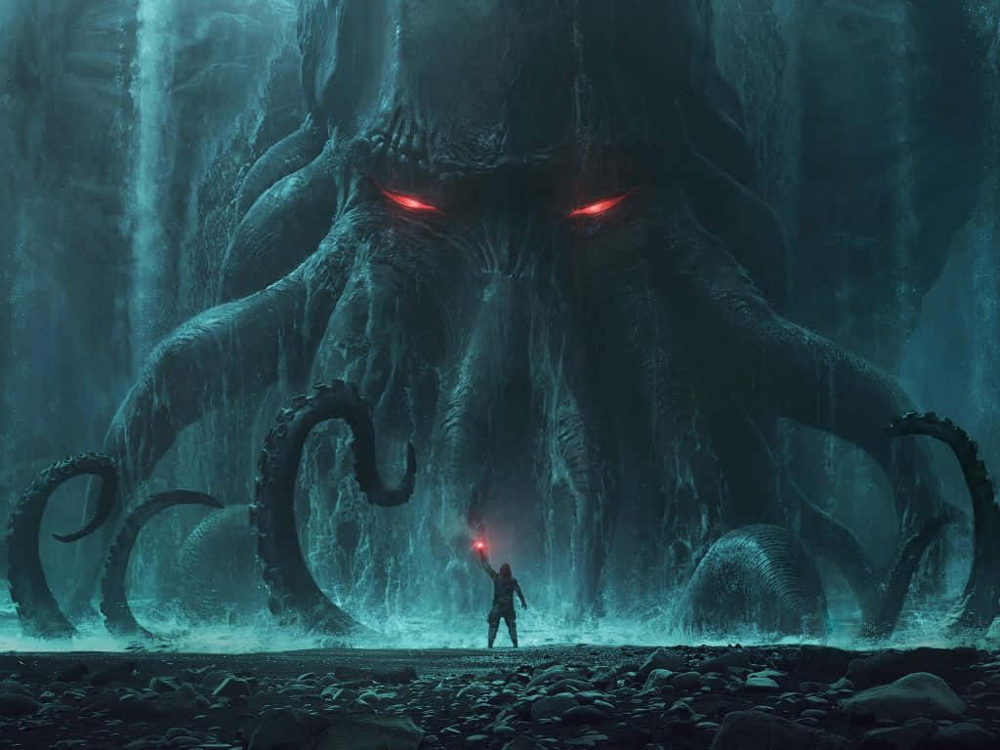

Um dos contos mais conhecidos e contados de todos.
O Chamado de Cthulhu é um conto de horror do escritor norte-americano H. P. Lovecraft, contando a investigação sobre um ser extraterrestre dos "antigos", que na mitologia lovecraftiana seriam criaturas cósmicas, vindas à Terra antes desta abrigar a vida.
Cthulhu é um deus que nas primeiras páginas do conto aparece como um ídolo de argila quase indescritível, possuindo um culto multimilenar dedicado a trazê-lo de volta — um retorno que desencadearia o fim da humanidade. O conto foi escrito em 1926 e foi publicado pela primeira vez na revista estadunidense Weird Tales (Contos Estranhos) em fevereiro de 1928.
